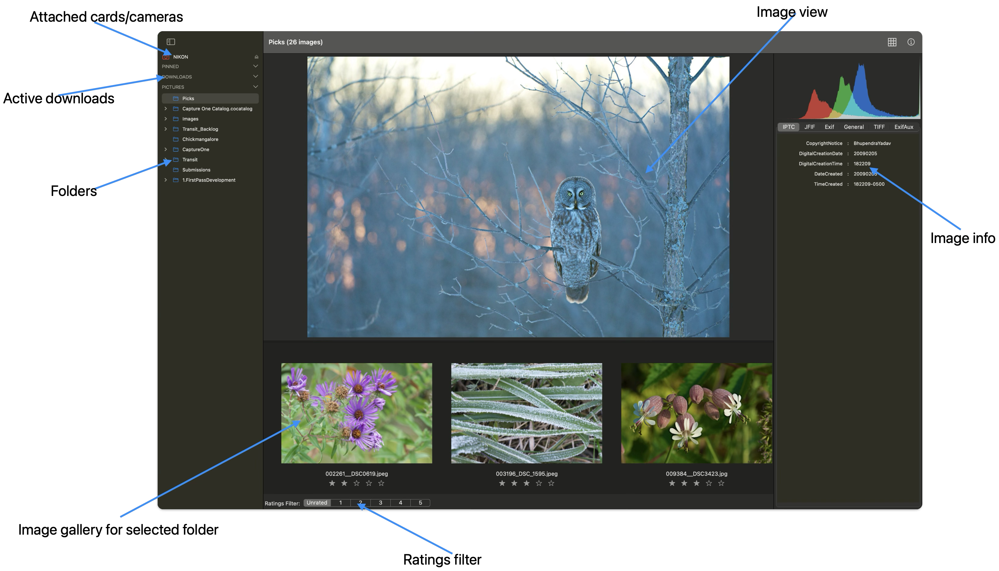
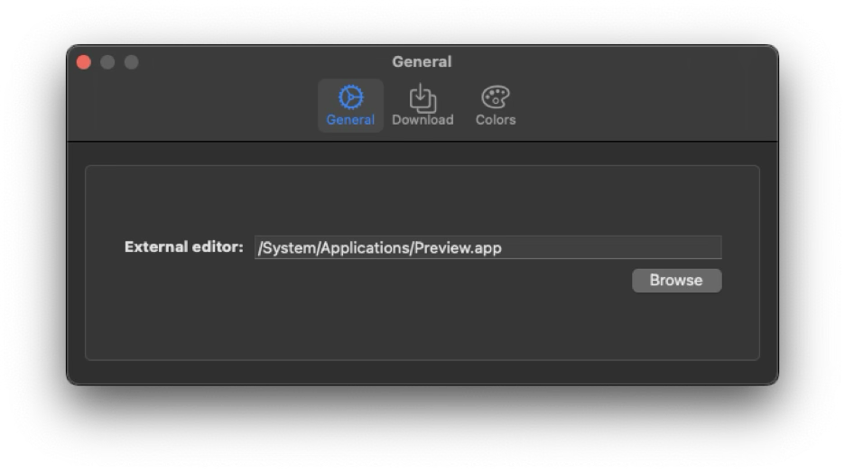
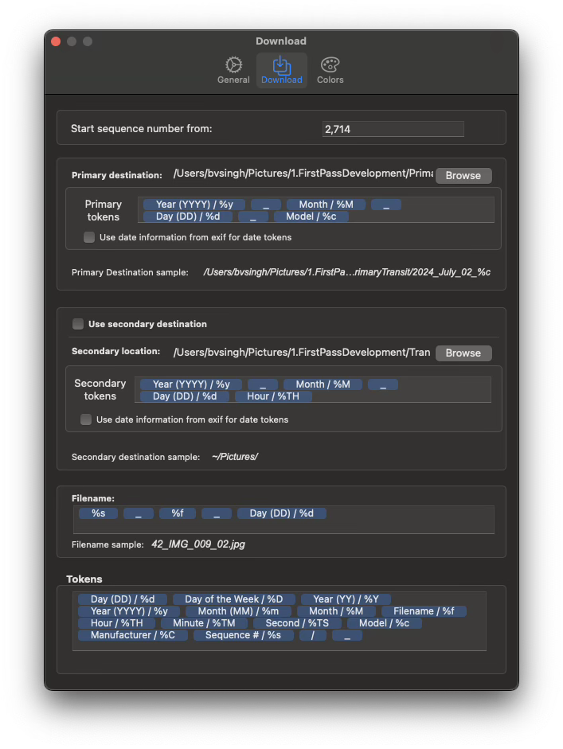
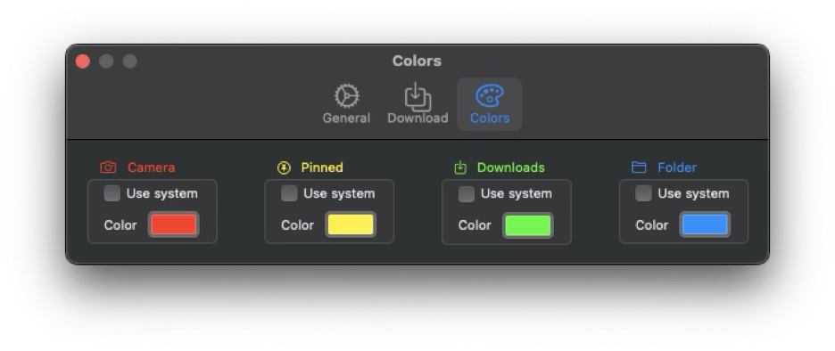
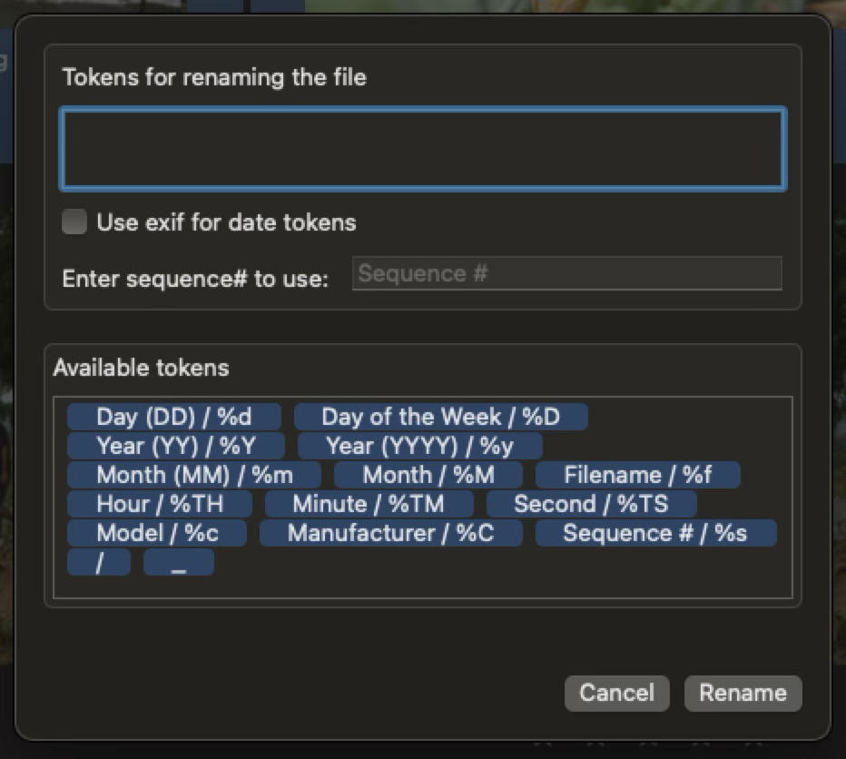

Downloading thousands of photographs from multiple memory cards can be a considerable challenge, particularly as each card must be downloaded individually, even when using several card readers. Furthermore, the initial editing process - rating, deleting, and detailed viewing - demands substantial time and effort. This software is specifically designed to assist photographers in reducing this workload by significantly expediting both the downloading process and the first pass edit, all within a single application.
This version of FirstPass has been re-imagined using SwiftUI and Swift.
FirstPass has a single window type. User can create multiple windows and can browse different folders or download different cards. Same window can also be used to download multiple cards, each download triggered sequentially.
In addition, user can use Settings window to configure download and color settings. It is highly recommended to configure download settings before downloading anything.
User can hide the sidebar using Hide Sidebar menu option or the Sidebar toggle button in the tool bar.
Right clicking on an image provides a context menu. Using this context menu users can change rating, show/hide image image information inspector, view the image in finder, delete image, rename the image and open with external editor. External editor can be set in settings.
Images in the gallery can be sorted in ascending or descending order using creation date, name or rating as the key. This can be done via Browser menu option.
Image information is shown in an inspector. Can be enabled using the context menu on the image or by selecting and image and clicking on the toolbar item
Rating filer is on the bottom left of the gallery. There are six buttons unrated and rating from 1 to 5. Clicking on any button filters out that rating.
When a camera is selected in the sidebar its images are shown in the main browser window. On the bottom left there are two button to download selected or download all images.
Settings window uses three tabs to organize settings. They are General, Download and Colors.
GENERAL General pane is used for setting external editor.
Download Download pane is used to set download destinations and image renaming tokens. Here user can set multiple download destinations. User can set primary and secondary destinations. User can also set the tokens for creating folders for primary and secondary downloads. Tokens can also be set for file renaming. Along with provided tokens user can add their own e.g. space, “_” etc.
Colours All elements in sidebar has coloured icons associated with them. There is a default set of colours, shown above. Users can use this pane to change the colours.
Along with renaming files while they are being downloaded from a camera or a card, they can also be renamed while viewing them in gallery. This does not move the files to different folder, just renames them in place. User can use all the same tokens as used for files while downloading from a camera or a card. In the image gallery user can select few images and right click to bring up renaming panel. User can provide tokens, specify which date to use if the date tokens are used and provide starting sequence number if renamed files result in name conflicts.
Note: After entering each word user must press enter to tokenize it. All known tokens should be dragged from collection to the renaming field.
For further questions, clarification or feedback please email us.